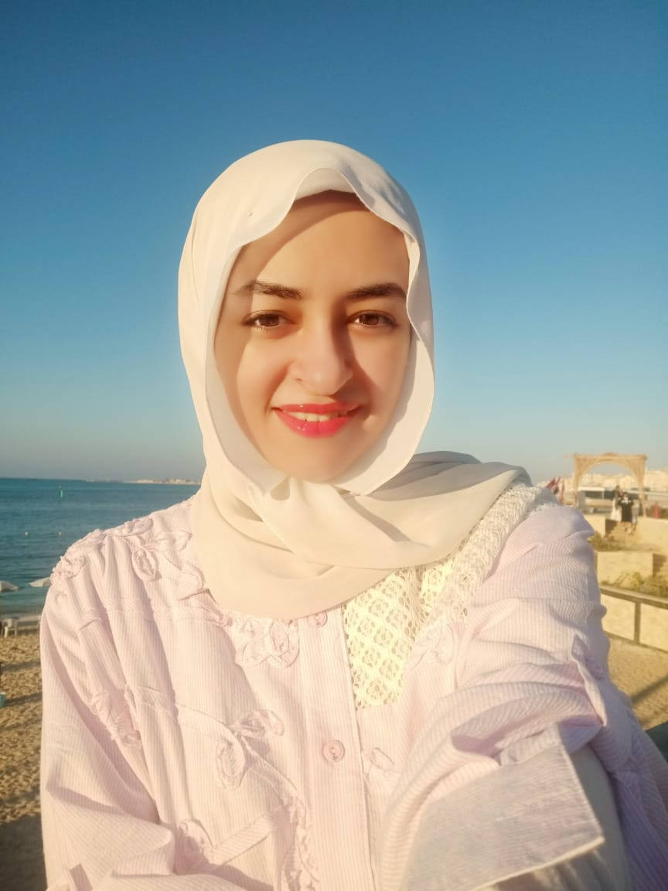
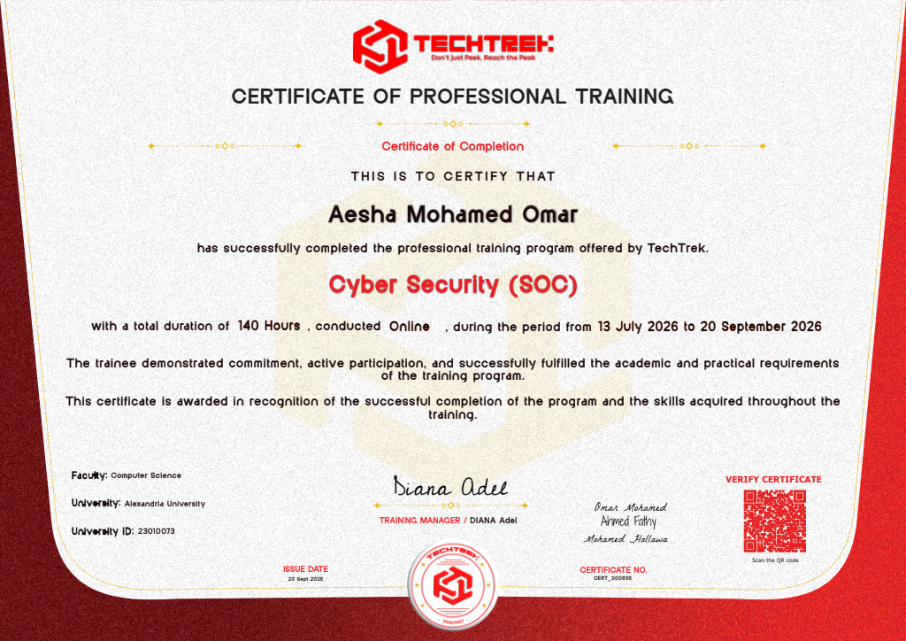
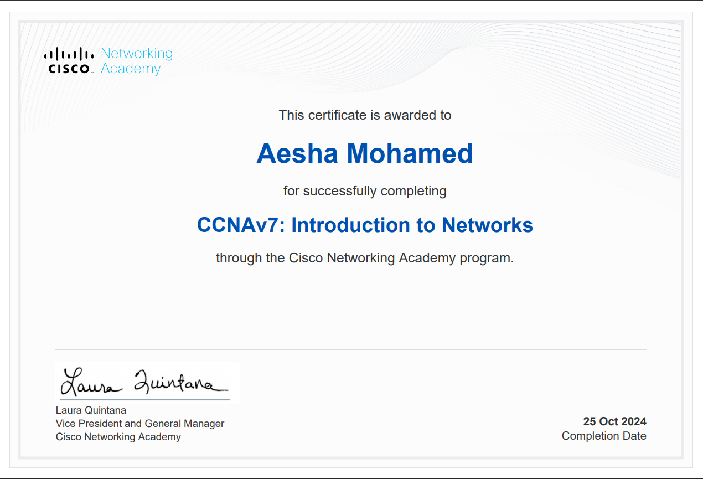
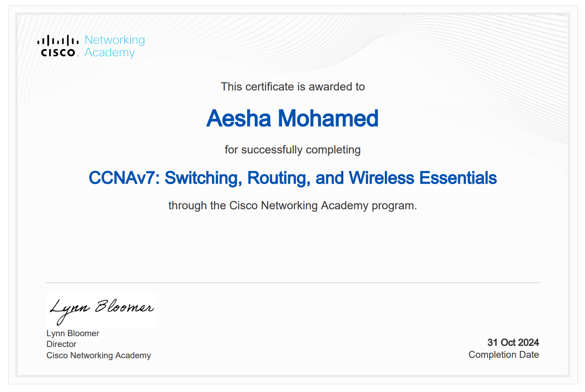
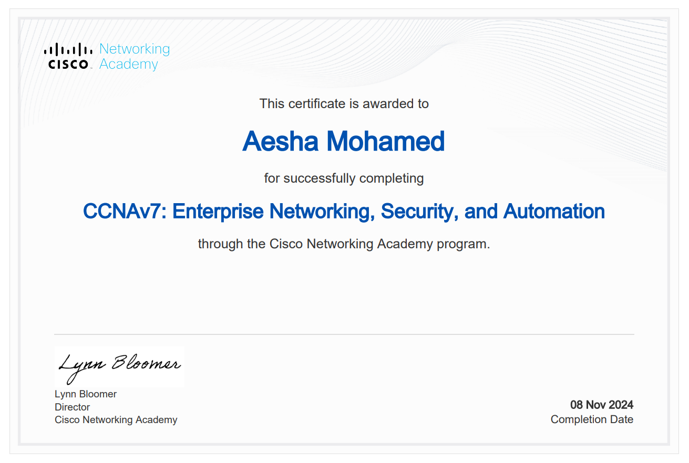
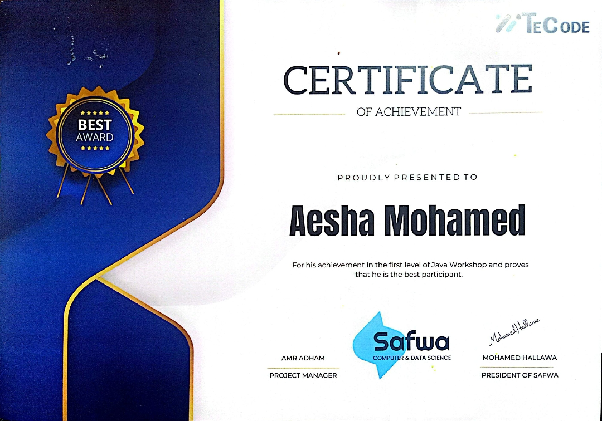

SOC Analyst focused on threat detection, log analysis, and incident investigation. Hands-on with QRadar, Splunk, and the ELK Stack — and comfortable enough on the offensive side (Nmap, Wireshark, Metasploit, Burp Suite) to know what an attack actually looks like in the logs.

A few realistic alerts, the kind that show up in a real queue. Click one to see how I'd work through it — what's suspicious, what's routine, and why.
Fourteen failed logons in under two minutes on a service account, then a success from the same IP — that's brute force, not a typo. The account shouldn't log in interactively at all.
Worth a look on any monitored network, but the process isn't hidden and there's an approved ticket for privacy-research tooling on this machine from the week before.
One machine reaching six others over SMB in three minutes, off-hours, is a lateral-movement pattern — the same shape as running EternalBlue against an unpatched host in the lab.
I'm a final-year Cybersecurity student at Alexandria University, currently training across two parallel SOC and incident-response programs — DEPI and AMIT Learning — having just completed a third, TechTrek, while building toward an entry-level SOC Analyst role.
My day-to-day practice covers SIEM monitoring, log analysis, and threat detection using IBM QRadar, Splunk, and the ELK Stack, alongside the Security+ domains: threats, identity and access management, incident response, and risk management. I also follow SANS SEC450 blue-team methodology to structure how I triage and investigate alerts.
To actually understand what I'm defending against, I spend time on the offensive side too — running phishing simulations, exploiting known CVEs like EternalBlue, and working through web app vulnerabilities on PortSwigger's Academy. I practice daily on TryHackMe — 22 rooms completed and ranked in the top 15% of learners on the platform — alongside Let's Defend and Hack The Box.
I help small businesses and startups catch security incidents early by turning raw SIEM alerts into clear, actionable investigations — combining hands-on blue-team monitoring with a real understanding of how attacks are actually built.
I split my lab time between defensive tooling (QRadar, Splunk, ELK) and offensive techniques (Metasploit, Burp Suite, phishing kits). That means I'm not just matching alerts to a playbook — I recognize what an attack actually looks like from having built a few myself.
I trained across DEPI, AMIT Learning, and TechTrek at the same time — three different curricula, SIEM stacks, and instructors, all pointed at the same skill set. It's more coverage in less time, and it's taught me to spot the same concept explained three different ways.
From credential-harvesting phishing pages to EternalBlue privilege escalation and AWS IAM misconfigurations — I've worked hands-on across the stages an investigation actually has to cover, not just isolated exercises.
CCNA-certified across routing, switching, and enterprise security — so when an alert references a VLAN, a routing anomaly, or a firewall rule, I'm reading it with real networking context, not guessing.

140-hour SOC training track — network fundamentals, Linux & Active Directory, Security+ domains, and SIEM analysis with ELK Stack and Splunk. Final graduation project graded 100/100.

First course in the CCNA track, covering foundational networking concepts — the OSI/TCP-IP models, addressing, and basic device configuration.
View on LinkedIn ↗
Second course in the track — VLANs, inter-VLAN routing, wireless LANs, and switching/routing fundamentals for small-to-medium networks.
View on LinkedIn ↗
Final course in the CCNA track — enterprise-scale network design, security fundamentals, and the basics of network automation.
View on LinkedIn ↗Python fundamentals through applied data analysis — data structures, control flow, functions, and data visualization with pandas.

Recognized as the best participant in the first level of a Java programming workshop.
Reviewing SIEM alerts (QRadar, Splunk, ELK) to separate real incidents from noise, with a clear written summary of what happened and why it matters.
Timeline reconstruction and initial root-cause analysis for a reported security event, following a structured incident-response methodology.
Controlled, safe phishing campaigns to test how a team responds — with a report on click rates, reporting rates, and where training would help most.
Nmap and Burp Suite-based scans of small web apps or networks, delivered as a prioritized findings report a non-security team can act on.
Checking IAM roles and policies for over-permissioned access and privilege-escalation paths, with concrete remediation steps.
Writing clear SOPs, incident reports, and detection-rule documentation — the write-ups that make an investigation useful to the next person.
I'm early in my career, but I put in real hours in the lab — training across three SOC/IR tracks at once, and practicing daily on TryHackMe and PortSwigger. If you're hiring for an entry-level SOC role, taking interns, or need a hand with a small security assessment, I'd love to hear from you. I check my inbox often and reply fast.
I am actively seeking entry-level SOC Analyst roles, internships, and technical collaboration in Egypt or remote settings.